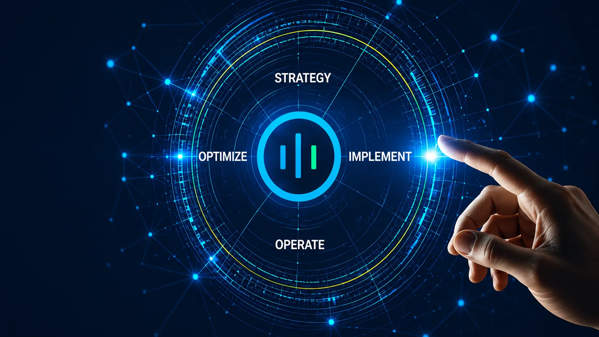

01
Temui
Keperluan, proses semasa, titik kesakitan dan ukuran kejayaan.
Daripada penemuan dan fit-gap kepada konfigurasi, integrasi, latihan, go-live serta sokongan mampan.

Kaedah berstruktur yang memastikan skop realistik dan menyokong penerimaan selepas go-live.
Keperluan, proses semasa, titik kesakitan dan ukuran kejayaan.
Fit-gap, blueprint penyelesaian, model data, peranan dan kawalan.
Konfigurasi standard dahulu; penyesuaian hanya apabila nilainya jelas.
API, webhook, middleware, portal, migrasi dan ujian.
UAT, semakan akses, perancangan cutover dan kesiapsiagaan latihan.
Go-live, hypercare, AMS, pengoptimuman dan semakan kejayaan pelanggan.
Keupayaan diterangkan secara bertanggungjawab sebagai kepakaran perundingan dan pelaksanaan melainkan status rakan rasmi telah disahkan.
Reka bentuk jualan, lead, pipeline, keterlihatan pelanggan dan penerimaan.
Aliran kerja perakaunan, invois, migrasi, keterlihatan kewangan dan pelaporan.
Stok, gudang, field service, penjadualan, mudah alih dan keterlihatan operasi.
Tiket, SLA, knowledge base, aliran kerja sokongan dan analitik perkhidmatan.
HR, pengambilan, projek, Sprints, penjejakan kerja dan penerimaan.
Aplikasi low-code, Deluge, aliran kerja, portal, extension dan API.
Sokongan fungsi, semakan proses, integrasi dan penambahbaikan laporan.
Nasihat ERP cloud awam, sokongan proses kewangan dan skop integrasi.
Sokongan ERP PKS, pemetaan proses, laporan dan nasihat add-on/integrasi.
Pengalaman pelanggan, proses HR, integrasi dan perancangan penerimaan.
Nasihat perjalanan, perbelanjaan dan perolehan tertakluk kepada skop.
Pengurusan tiket, analisis isu, enhancement, ujian, latihan dan pengoptimuman.
Zoho, SAP, Oracle, NetSuite, Microsoft 365, Salesforce, POS dan sistem tersuai.
Kelulusan, amaran, penyegerakan data, penghalaan tugas, Deluge dan kawalan operasi.
Kualiti data, migrasi, dashboard, reka bentuk KPI dan pelaporan pengurusan.
Retainer sokongan, insiden, change request, pemantauan dan pengoptimuman berkala.
EastBridge is building a disciplined research, product and intellectual-property capability around real customer problems.
Structured discovery, architecture, prototypes, pilots and reusable product capabilities.
Teroka R&D →Source-code governance, product ownership, trademarks, software rights and commercial evidence.
Teroka Inovasi Vietnam →Efficient architecture, proportionate AI, lifecycle discipline and transparent measurement.
Teroka teknologi hijau →Perkhidmatan baharu membantu organisasi menukar masalah operasi kepada produk, harta intelek dan seni bina digital lebih cekap.
Portfolio idea, stage gate, seni bina produk, tadbir urus sumber, pemilikan dan pengkomersialan.
Semakan prestasi, data, awan, pilihan model, pengawasan manusia dan kitar hayat.
Aliran kerja, integrasi dan papan pemuka untuk bukti ESG, sumber dan impak.
Kongsikan proses, sistem dan keutamaan semasa anda. Kami akan mencadangkan langkah seterusnya yang terkawal, skop yang jelas dan laluan penyampaian yang realistik.